第一、二章
名词解释
软件工程：
1. 运用系统的、规范的、可量化的方法进行软件的开发、使用、和维护，即将工程应用于软件；2. 以及对上述过程的方法的研究。
简答：
从1950s~2000s之间的特点：
50 年代：科学计算；以机器为中心进行编程；软件是硬件的一部分。
60 年代：业务应用；软件不同于硬件；用软件工程的方式生产软件。
70 年代：结构化方法；瀑布模型；强调规则和纪律
80 年代：追求生产力最大化；现代结构化/面向对象编程广泛使用；重视过程的作用
90 年代：企业为中心的大规模软件开发；追求快速开发、可变更新和用户价值；Web应用出现
00 年代：大规模Web应用；大量面向大众的Web产品；追求快速开发、可变更新、用户价值和创新
第四章
如何管理团队？
在实验中采取了哪些办法？有哪些经验？
团队结构有哪几种？
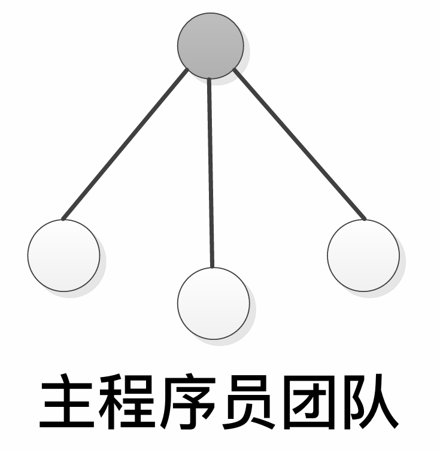
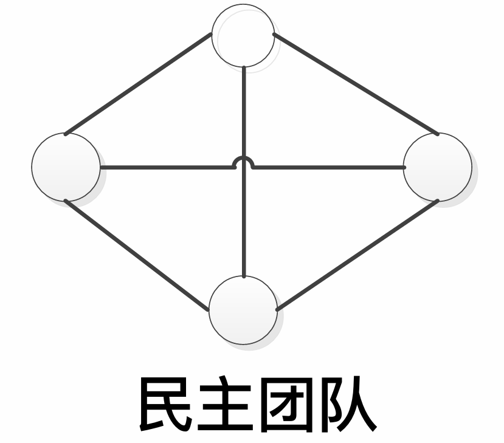
主程序员团队（一名主程序员，其他人只对主程序员负责）、
民主团队（团队成员完全交流，项目经理只管理、解决冲突、取得共识）、
开放团队（成员自由交流，项目经理也弱化管理，将团队作为黑箱运行，适用于创新性工作）
质量保障有哪些措施？结合实验进行说明
评审（由作者之外的其他人进行检查）：规划 → 总体部署 → 准备 → 审查会议 → 返工 → 跟踪
质量度量（测度（用于量化的指标）、测量（基于指标评估软件活动）、度量（软件在某个属性上的量化测度程度））、
测试
配置管理有哪些活动？实验中是如何进行配置管理的？
配置管理活动：
标识配置项（确定需要保存/管理的配置项）、
版本管理（为配置项设置版本号，变更时需要更新版本号）、
变更控制（配置项发生变化时，需要根据变更控制过程管理）、
配置审计（确认配置项的完整性、正确性、一致性和可跟踪性）、
状态报告（标记、收集和维持配置状态信息）、
软件发布管理（将配置项发布到开发活动之外，创建和发布可用的产品）
第五章
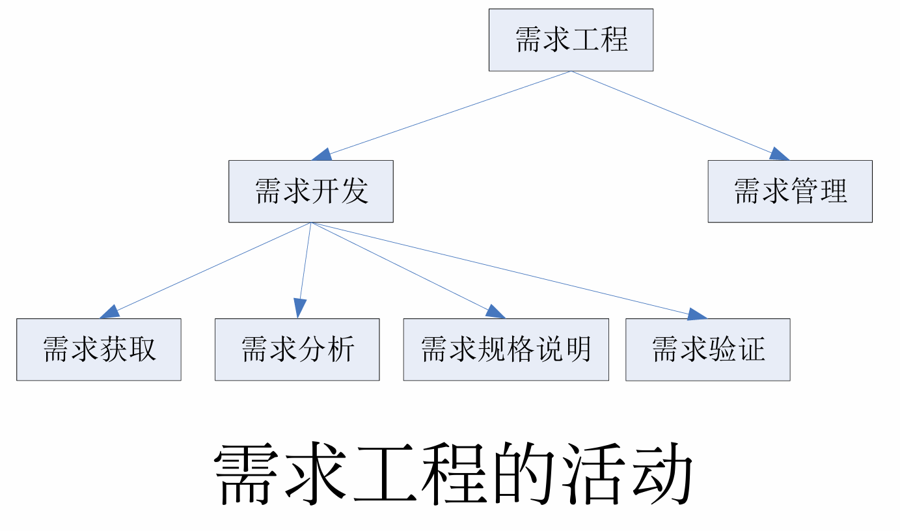
名词解释：
需求
用户为了解决问题或达到某些目标所需要的条件或能力；
系统或系统部件为了满足合同、标准、规范或其他正式文档所规定的要求而需要具备的条件或能力；
对前两者中的一个条件或一种能力的一种文档化表述。
区分需求的三个层次
给出一个实例，给出其三个层次的例子
对给定的需求示例，判定其层次，例如课程实验/ATM/图书管理
需求层次：业务需求（大目标）→ 用户需求（小任务）→ 系统需求（系统行为）
掌握需求的类型
对给定的实例，给出其不同类型的需求例子
对给定的需求示例，判定其类型，例如课程实验/ATM/图书管理…
需求类型：
功能需求、
性能需求（如速度，容量、吞吐量、负载、实时性）、
质量属性（完成的质量，如可靠性、可维护性、安全性、可用性）、
对外接口、
约束、
数据需求
第六章
为给定的描述建立：
用例图、分析类图（概念类图）（只有属性，没有方法）、系统顺序图、状态图
数据流图：
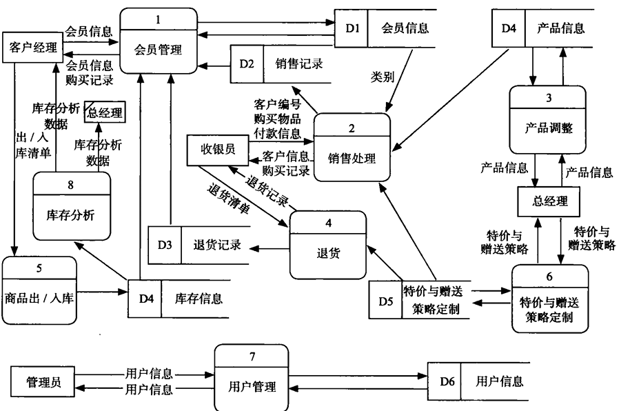
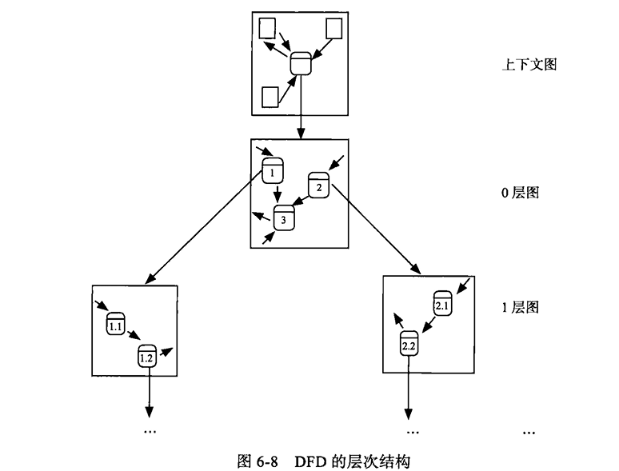
实体关系图：
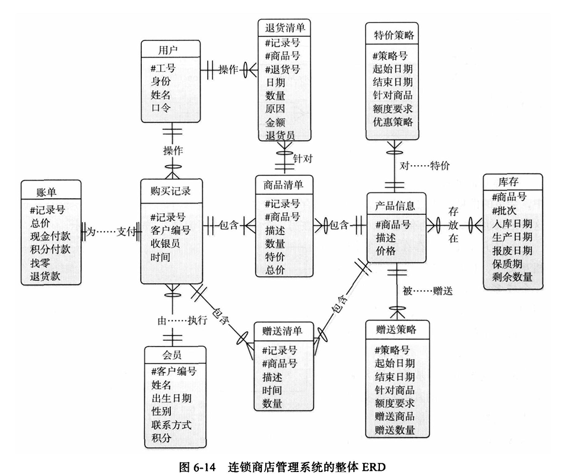
用例图：
用例（圈）、
参与者（小人）、
关系（线）、
系统边界（框）
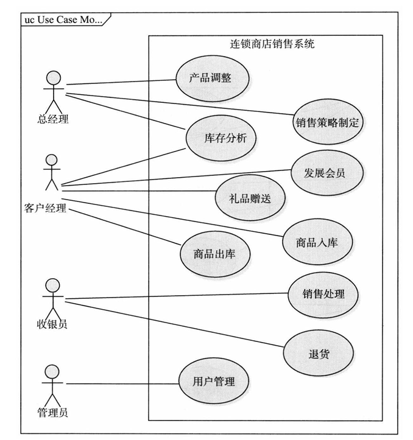
用例粒度：
为应对一个业务事件，由一个用户发起，在一个连续时间段内完成，可以增加业务价值的任务
概念类图：
概念类（名字与重要属性），
依赖（虚线V字箭头），
关联（实线，单向V字箭头或双向），
聚合（实线空心菱形），
组合（实线实心菱形），
继承（实线空心三角），
实现（虚线空心三角）
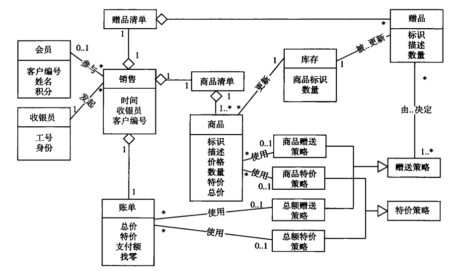
概念类图的建立：
识别候选类（名词分析），
筛选概念类（状态与行为），
识别关联，
识别重要属性
系统顺序图：
对象（人或者方框），
生命线（虚线），
执行态（生命线上的条带），
同步消息（实线实心三角箭头），
异步消息（实线V字箭头），
返回消息（虚线V字箭头），
组合段（左上角带名字的方框，opt/alt/loop/…）
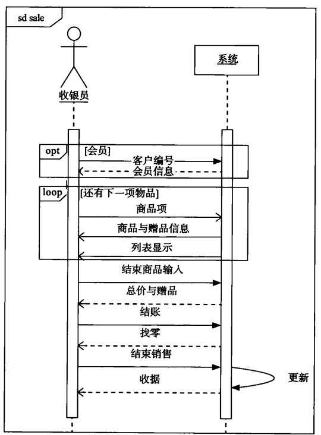
状态图：
起始状态（实心圆），
状态（圆角矩形），
转移（实线V字箭头，标注格式为 事件 [监护条件]/动作），
结束状态（空心圆套实心圆）
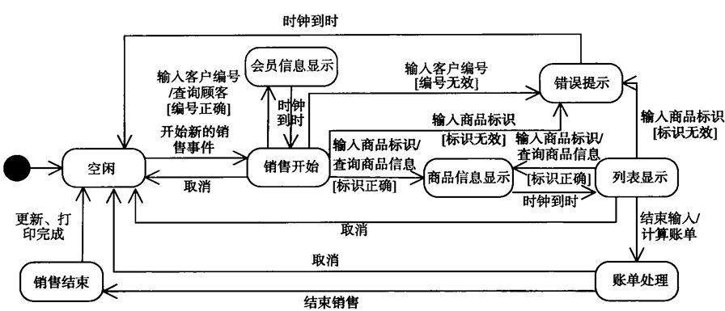
第七章
为什么需要需求规格说明？结合实验进行说明
软件开发过程中会将开发任务细分为多个子任务分配给不同的人员，分解的子任务之间需要相互沟通和交流。
子任务和人员间存在错综复杂的关系，存在大量沟通与交流，所以软件系统开发中需要编写多种不同类型的文档来针对项目中需要进行广泛交流的内容。
用例文档以用户的角度以用例文本来描述系统和外界交互；需求规格说明文档从软件产品角度以系统级需求列表方式描述系统解决方案
对给定的需求示例，判定并修正其错误，对给定的需求规格说明片段，找出并修正其错误
需求规格说明：
使用用户术语：不要使用「类、函数、参数、对象」等计算机术语
可验证：不能模糊不清，不要用模糊和歧义词汇
可行：技术上、成本上，不能不切实际
对给定的需求示例，设计功能测试用例（结合测试方法）

第八章
名词解释：
软件设计
关于软件对象的设计，既指软件对象实现的规格说明，也指产生这个规格说明的过程。
具体地说，软件设计是一份软件设计工程师创造的设计规格说明，包含软件设计描述和软件原型，保证软件能够满足需求规格，在一定的时间、费用、人员等限制条件下能够将软件部署在一定的物理环境里，达到业务目标。
软件设计的核心思想是什么？
主要思路：分而治之
核心思想：
抽象：分离接口和实现
分解：将系统分割为子系统以及子系统之间的联系
软件工程设计有哪三个层次？各层的主要思想是什么？
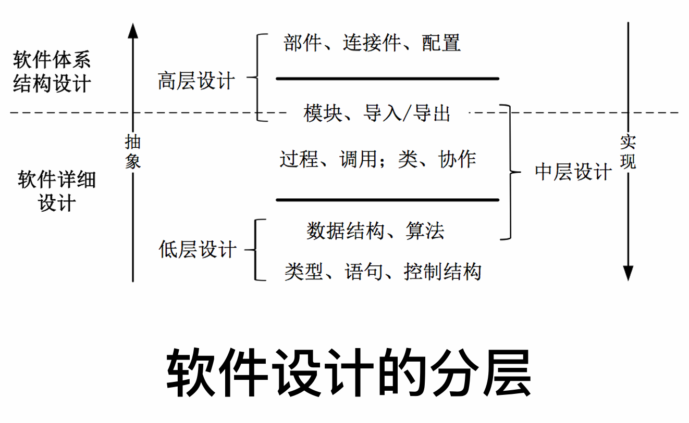
高层设计（部件、连接件、配置）：反映软件高层抽象的构建层次，描述高层结构、关注点和设计决策
中层设计（过程、调用；类、协作）：模块化、信息隐藏、OO原则
低层设计（数据结构、算法）：将基本的语言单位（类型与语句）组织起来，建立高质量的「数据结构+算法」的代码设计
第九、十章
体系结构的概念
软件体系结构 = 部件 + 连接件 + 配置
- 部件：承载系统主要功能
- 连接件：定义部件间交互（和部件平等）
- 配置：定义了部件和连接件之间的关联
一个软件系统的体系结构定义了系统的计算部件和部件之间的交互
体系结构的风格的优缺点
体系结构风格：主程序/子程序风格，面向对象式风格，分层风格，MVC风格
主程序/子程序风格：
树状连接，以程序调用作为连接件。
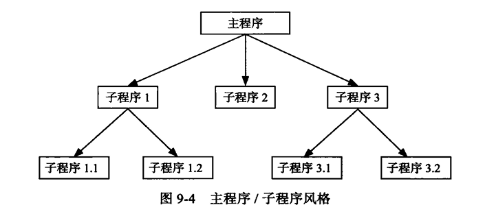
优点：
流程清晰易于理解，
易于控制程序的正确性。
缺点：
强耦合，依赖交互方的接口规格，难以修改和复用；
限制数据交互，可能产生公共耦合。
面向对象式风格：
将系统组织为多个独立的对象，对象通过协作机制共同完成任务。
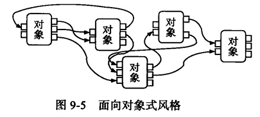
优点：
可以容易地修改对象的内部实现，
契合模块化思想，易开发、理解和复用。
缺点：
接口的耦合性，
标志耦合，
引入了OO的副作用，更难以控制程序的正确性。
分层风格：
系统被分为多个层次，抽象程度随层次提高而提升，相邻层次间常通过程序调用连接，跨层次和逆层次的调用被禁止。

优点：
设计清晰易于理解，
不同层次可以并行开发，
每个层次具有良好的可复用性和内部可修改性。
缺点：
交互协议难以修改，
层次较多还可能有性能损失，
层次的数量和粒度难以确定。
MVC风格：
（模型-视图-控制 Model-View-Control）以程序调用为连接件，将系统组织为模型、视图、控制三部件。

优点：
机制清晰易于开发，
视图和控制有可修改性，
适用于网络系统开发。
缺点：
复杂性，
模型部分修改困难。
体系结构设计的过程？
- 分析关键需求和项目约束
- 选择合适的体系结构风格
- 进行体系结构逻辑（抽象）设计
- 根据逻辑设计进行体系结构物理（实现）设计
- 完善体系结构设计
- 添加构件接口
- 迭代3~7
包的原则
内聚
重用发布等价原则：重用的单元 ≌ 发布的单元，
共同闭包原则：「修改时一起改」共同改变的类在同一个包里，利于开发者维护，
共同复用原则：「使用时一起用」共同被重用的类在同一个包里，利于使用者重用，倾向于产生小的包，
耦合
无环依赖原则：依赖不该有环，出现了环可以使用依赖倒置解决，
稳定依赖原则：依赖只应该从不稳定到稳定的方向，
稳定抽象原则：越稳定的包越抽象
体系结构构建之间接口的定义*
构件接口定义：每个构件有供和需接口，对供接口给出语法、前置的后置条件，对需接口给出来源和所需的服务。
提供的服务（供接口）
语法，
前置条件
后置条件
需要的服务（需接口）
服务名
服务
体系结构开发集成测试用例（Stub和Driver）
集成策略分为
大爆炸式
一次全塞了
增量式
- 自顶向下
- 一个Driver，下层用stub，不断用下层模块来代替stub
- 按深度优先可以首先验证一个完整的功能需求；利于定位故障
- 桩开发量大；底层测试不充分
- 自底向上
- 用Driver来替代上层
- 桩工作量小；底层组件开发可以并行；利于故障定位
- 驱动开发量大；高层测试不充分
- 持续集成
- 每次完成一些开发任务后就用开发结果来替代stub测试
第十一章
名词解释：
（人机交互的）可用性*：
- 易学性：新手用户容易学习；完全没有培训的用户完成特定任务所需的时间
- 效率：熟练用户完成特定任务需要的时间
- 易记性：以前使用过系统的用户完成特定任务需要的时间
- 出错率：用户使用系统时犯多少错、错误多严重、能否从错误中容易地恢复
- 主管满意度：用户体验，调查问卷
界面设计原则：
人
精神模型
用户总是看到自己想看的
精神模型就是人机交互时头脑中的人物模型。用户识别图像，根据隐喻将控件和熟悉事务联系起来。
差异性
- 不同群体的任务模型不同，比如新手用户、熟练用户、专家用户
- 为不同用户群体提供差异化的交互机制。比如为新手提供GUI，为专家提供命令行、快捷方式、热键
机
- 可视化设计
- 不要暴露内部设计
- 展示细节
交互
- 导航
- 为用户提供完成任务的入口，好的导航符合精神模型
- 菜单导航、快捷方式导航、列表导航、状态栏导航、按钮导航
- 反馈
- 对用户行为进行反馈，让用户意识到行为的后果
- 声音、视觉…
- 交互原则（重点）
- 简洁设计：图片比描述文字更清晰。7±2原则，有效表达下越简洁越好
- 一致性设计：
- 相似的任务相似的交互；
- 与已有的软件类似，遵循用户已有的精神模型
- 低出错率设计：
- 避免错误操作（disabled button）；
- 良好而有建设性的错误提示；
- 错误恢复与故障解决帮助手册
- 易记性：
- 减少记忆负担（自动补全、提示）；
- 逐层递进地展示；
- 直观的快捷方式（图片按钮）；
- 设置有意义的默认值
导航：帮助用户找到任务入口，分为全局结构和局部结构
反馈：提示用户交互行为的接口，同时不打断用户工作的意识流
协作式设计：以用户为中心，调整计算机因素以更好地适应并帮助⽤户的设计方式
详细设计的出发点
- 需求开发的结果（需求规格说明和需求分析模型）
- 软件体系结构的结果（软件体系结构设计方案与原型）
职责分配
通过职责建立静态模型：面向对象分解中，系统是由很多对象组成的。对象各自完成相应的职责，从而协作完成一个大的职责。
类的职责主要有两部分构成：属性职责和方法职责。
类与类之间也不是孤立存在的，它们之间存在一定的关系。关系表达了相应职责的划分和组合。它们的强弱顺序为：依赖<关联<聚合<组合<继承。
协作：
根据协作建立动态模型：
从小到大，将对象的小职责聚合形成大职责；
大到小，将大职责分配给各个小对象。
通过这两种方法，共同完成对协作的抽象。
GRASP：信息专家（职责分配给信息足够的类），对象创建者（组合/聚合容器，记录者，密切使用者，有足够信息者），高内聚，低耦合，控制器（处理系统事件，传递给合适的类）
控制风格
控制风格决定了决策由谁来做和怎么做决策

分散式：系统行为完全分散于各个类
集中式：少数大控制器处理所有系统逻辑
委托式：任务委托给若干中等规模控制器，分别处理部分重要逻辑
第十三章
名词解释：
耦合*：
两个模块之间关系的复杂程度。

分内容耦合（直接使用模块的内容）、
公共耦合（共同使用全局变量）、
重复耦合（共有重复的逻辑）、
控制耦合（传递控制信息）、
标记耦合（传递数据结构）、
数据耦合（传递基本类型数据）
内聚*：
一个模块内部联系的紧密性。

偶然内聚（模块提供多个不相关的操作）、
逻辑内聚（模块提供一系列逻辑上相似但不直接关联的操作）、
时间内聚（模块提供有时间相关性的操作）、
过程内聚（模块提供同属一个过程的操作）、
通信内聚（模块提供针对同一数据的一系列操作）、
功能内聚（模块只提供一个操作或达成单一目的）、
信息内聚（模块提供一系列操作，在同一个数据结构上进行而成为一个统一的整体）
信息隐藏
基本思想：
每个模块都隐藏着一个重要的设计决策。每个模块都有一个职责，对外表现为一份契约，契约之下隐藏着只有模块本身知道的设计决策或秘密，其细节只有模块自己知道。
两种常见的信息隐藏决策：
- 根据需求分配职责
- 内部实现机制
第十四章
模块化原则：
避免全局变量，
访问调用等尽量写成显式的，
1 | martin.data["firstname"] = "Martin"; // 不好 |
避免重复代码，
基于接口编程（契约式设计，为软件组件定义正式、精确、可验证的接口，可以利用异常和断言来实现），
迪米特法则（只依赖离自己最近的单元），
接口隔离原则（用户不应被迫依赖他们不需要的功能，要拆分小接口），
里氏替换原则（子类对象应该能完全替代基类对象），
组合优于继承（尽量通过组合进行复用），
单一职责原则（一个类应该拥有单一的职责，并且这一职责由这个类完全封装起来）
第十五章
信息隐藏的含义
每一个模块都隐藏了这个模块中关于重要设计决策的实现，以至于只有这个模块的每一个组成部分才能知道具体的细节
需要隐藏的两种常见设计决策
- 需求（模块说明的主要秘密）与实现——暴露外部表现，封装内部结构
- 实现机制变更（模块说明的次要秘密）——暴露稳定抽象接口，封装具体实现细节
封装：
同时封装数据和行为，
分离外部接口和内部实现
开放封闭原则（OCP）：
「类/好的设计」应该对拓展开放，对修改封闭，新需求的实现应该通过增加代码而不是改动现有代码进行
违反了OCP原则的典型标志：出现了switch或者if-else
依赖倒置原则（DIP）：
抽象不应该依赖细节，细节应该依赖抽象；
高层模块不应该依赖低层模块，而是二者应该共同依赖抽象
使用抽象类（继承）机制倒置依赖
第十六章
如何实现可修改性、可扩展性、灵活性
进行接口和实现的分离
具体地说，
通过接口和实现该接口的类；
通过子类继承父类
策略模式，抽象工厂模式，单例模式，迭代器模式：
略
第十七、十八章
构造包含的活动
详细设计；编程；测试；调试；代码评审；集成与构建；构造管理。
名词解释
重构
修改软件系统的严谨方法，在不修改外部表现（不改变软件功能）的情况下改进内部结构（提升详细设计结构质量）
测试驱动开发
测试驱动开发要求程序员在编写一段代码之前，优先完成该段代码的测试代码。
测试代码之后，程序员再编写程序代码，并在编程中重复执行测试代码，以验证程序代码的正确性。
结对编程
两个程序员挨着坐在一起，共同协作进行软件构造活动
驾驶员：输入代码
观察员：评审，考虑战略性方向
两个程序员经常互换角色
代码的坏味道：
太长的方法（往往意味着方法完成了太多的任务，不是功能内聚的），
太大的类（往往意味着类不是单一职责的，需要分解），
太多的方法参数（往往意味着方法的任务太多，或者参数的类型抽象层次太低），
多处相似的复杂控制结构（往往意味着多态策略不足），
重复的代码（往往意味着重复耦合），
过多的注释（往往意味着代码逻辑不清晰或可读性不好）
契约式设计
契约式设计又称断言式设计，它的基本思想是：如果一个函数或方法，在前置条件满足的情况下开始执行，完成后能够满足后置条件，那么这个函数就是正确、可靠的。
异常
断言
防御性编程
对输入不做任何假设，主动进行检查来保证参数的有效性
表驱动编程
将复杂的决策包装为决策表，利用决策表解决
单元测试用例的设计
用MockObject创建桩程序来测试类方法，与为类开发测试用例
桩程序：与被测试部件交互，在规格上扮演其他系统组件
驱动程序：创建被测试部件的测试环境，驱动并监控部件执行测试用例，检查执行结果
第十九章
黑盒测试方法：
等价类划分（将输入域划分成若干等价类，从每个等价类中取若干代表数据作为测试用例），
边界值分析（针对每个等价类的边界情况设计测试用例，更有利于发现程序的缺陷），
决策表（将复杂逻辑转为决策表，并对每个决策规则设计测试用例），
状态转换（为测试对象建立状态图，以图中的状态转换为基础设计测试用例）
白盒测试方法：
语句覆盖（保证每行代码都被执行至少一次），
条件覆盖（每个条件判断的每个结果都至少出现一次），
路径覆盖（程序可能的每条执行路径都至少经过一次）
缺点：开销大，不能检验需求的规格
第二十、二十一章
如何理解软件维护的重要性？
由于会出现新的需求，如不维护软件将减小甚至失去服务用户的作用。
随着软件产品的生命周期越来越长，在软件生存期内外界环境发生变化的可能性越来越大，因此，软件经常需要修改以适应外界环境的改变
软件产品或多或少的会有缺陷，当缺陷暴露出来时，必须予以及时的解决
开发可维护软件的方法
考虑软件的可变性：分析需求易变性、为变更进行设计
为降低维护困难而开发：编写详细的技术文档并保持及时更新、保证代码可读性、维护需求跟踪链、维护回归测试基线
演化式生命周期模型
初始开发（开发软件的第一个版本） –第一个版本–>
演化（修改）（处理预先安排的需求增量、需求变更等，过程中复杂性逐渐增高，直到丧失可演化性） –丧失可演化性–>
服务（补丁）（不再增加价值，只是修正已有缺陷） –终止服务–>
逐步淘汰（开发者不再维护，有用户还在使用） –替换–>
停止（开发者不再维护，用户也不再使用）
用户文档
是指为用户编写参考指南或者操作教程，常见的如用户使用手册、联机帮助文档等，统称为用户文档。
文档内容的组织应当支持其使用模式，常见的是指导模式和参考模式两种。
指导模式根据用户的任务组织程序规程，相关的软件任务组织在相同的章节或主题。指导模式要先描述简单的、共性的任务，然后再以其为基础组织更加复杂的任务描述。 「有主线」
参考模式按照方便随机访问独立信息单元的方式组织内容。例如，按字母顺序排列软件的命令或错误消息列表。如果文档需要同时包含两种模式，就需要将其清楚地区分成不同的章节或主题，或者在同一个章节或主题内区分为不同的格式。「易查询」
系统文档
更注重系统维护方面的内容，例如系统性能调整、访问权限控制、常见故障解决等等。
因此，系统管理员文档需要详细介绍软硬件的配置方式、网络连接方式、安全验证与访问授权方法、备份与容灾方法、部件替换方法等等。
逆向工程
定义：分析目标系统，标识系统的部件及其交互关系，并且使用其它形式或者更高层的抽象创建系统表现的过程。
基本原理：抽取软件系统的需求与设计而隐藏实现细节，然后在需求与设计的层次上描述软件系统，以建立对系统更加准确和清晰的理解
主要关注点是理解软件，但并不修改软件
再工程
定义：检查和改造一个目标系统，用新的模式式及其实现复原该目标系统。
目的：对遗留软件系统进行分析和重新开发，以便进一步利用新技术来改善系统或促进现存系统的再利用。
主要包括：
改进人们对软件的理解；
改进软件自身，通常是提高其可维护性、可复用性和可演化性。
常见具体活动有：
重新文档化；
重组系统的结构；
将系统转换为更新的编程语言；
修改数据的结构组织。
主要关注如何修改软件，不花大力气理解软件。所以再工程前常有一个前导的逆向工程
第二十二、二十三章
软件生命周期模型：
将软件从生产到报废的生命周期分割为不同阶段，每段阶段有明确的典型输入/输出、主要活动和执行人，各个阶段形成明确、连续的顺次过程，这些阶段的划分就被称为软件生命周期模型。
典型的软件生命周期模型：需求工程->软件设计->软件实现->软件测试->软件交付->软件维护
软件演化生命周期模型就是一种软件生命周期模型
软件过程模型：
构建-修复模型：
特征：
- 没有对开发过程进行规范和组织，因此一旦开发过程超出个人控制能力，就会导致开发过程无法有效进行而失败。
- 对需求的真实性没有进行分析
- 没有考虑软件结构的质量，导致结构在修改中越来越糟，直至无法修改
- 没有考虑测试和程序的可维护性，也没有任何文档，导致难以维护
构建->修复->维护。
完全无组织，全是缺点
瀑布模型：
需求开发->软件设计->软件实现->软件测试->软件交付->软件维护，
文档驱动
特征：
- 对于软件开发活动有明确阶段划分
- 每个阶段的结果都必须验证，使得该模型是“文档驱动”
允许活动出现反复和迭代。
优点： 清晰的阶段划分有利于开发者以关注点分离的方式更好的进行复杂软件项目的开发。
缺点：
- 对文档期望过高
- 对开发活动的线性顺序假设（线性顺序与迭代相反）
- 客户参与度不够（需求被限制在一个时间段）
- 里程碑粒度过粗（软件复杂使得每个阶段时间长，无法尽早发现缺陷）
增量迭代模型：
对每个增量应用瀑布模型，得到多个并行的瀑布式开发。
需求驱动
特征： 项目开始时，通过系统需求开发和核心体系结构设计活动完成项目的前景范围的界定，然后将后续开发活动组织为多个迭代、并行的瀑布式开发活动。第一个迭代完成的往往是核心工作，满足基本需求，后续迭代完成附带特性。
优点：
迭代式开发更符合实际情况；
并行开发可以缩短开发时间；
渐进交付可以加强用户反馈从而降低风险。
缺点：
各个增量是逐步并入系统的，不能破坏已构造好的部分，这要求系统有开放式的结构；
需要一个清晰的项目前景和范围来进行开发规划
演化模型：
以瀑布模型开发核心系统，此后根据用户反馈不断设计演进的新系统，启动若干并行的瀑布开发。
需求驱动
模糊了维护和新开发的界限
特征： 更好地应对需求变更，更适用于需求变更比较频繁或不确定性较多的领域。将软件开发组织为多个迭代
优点：
- 增量迭代模型一样。
缺点：
无法在项目早期确定项目范围；
后续迭代的开发是在旧系统基础上进行的，把握不好可能退化成构建-修复模型
原型模型：
对抛弃式原型进行演化，得到清晰需求后再基于此使用瀑布模型。
需求驱动
特点： 大量使用抛弃式原型（抛弃式原型：通过模拟“未来”的产品，将“未来”的知识置于“现在”进行推敲，解决不确定性）
优点：
加强了与客户的交流，能取得较好的客户满意度；
适用于不确定性大的新颖领域。
缺点：
原型开发可能带来新的风险，如原型开发耗费大量成本；
若负责人不舍得抛弃抛弃式原型，可能会使得原型的低质量代码流入产品，影响最终产品的质量
螺旋模型：
风险驱动
基于原型解决风险，通过四次迭代解决风险较高的几个阶段后进入瀑布模型。
特点： 基本思想是尽早解决比较高的风险，如果有些问题实在无法解决，那么早发现比项目结束时再发现要好，至少损失要小得多。风险是指因为不确定性（对未来知识了解有限）而可能给项目带来损失的情况，原型能够澄清不确定性，所以原型能够解决风险。
迭代与瀑布的结合：开发阶段是瀑布式的，风险分析是迭代的
优点：
- 可以降低风险。
缺点：
需要利用原型手段，会有原型带来的风险；
模型较为复杂，不利于管理者根据其组织软件开发活动
Rational 统一过程，敏捷过程